Oito coisas pedidas de uma vez. Na mesa: comandantes parceiros contam os 21 de cada um, a troca de líder é anunciada na hora, a música ambiente sente a mesa e o descanso de tela conta curiosidades reais. No ranking: aba de Comandantes com deck contra deck, quanto vale começar, prêmio de maior virada e uma tela pra arrumar os decks do perfil. E o log da partida vai inteiro pro servidor, que antes cortava em 500 eventos.
O dano de comandante era um número por oponente. Com dois comandantes isso dava errado: 11 de um e 10 de outro somavam 21 sem ninguém ter matado. Agora cada comandante conta os seus 21.
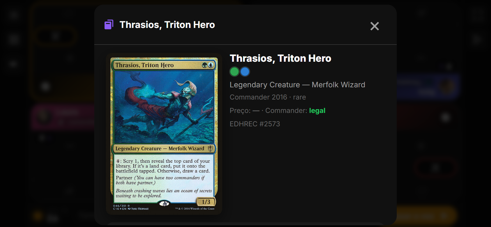
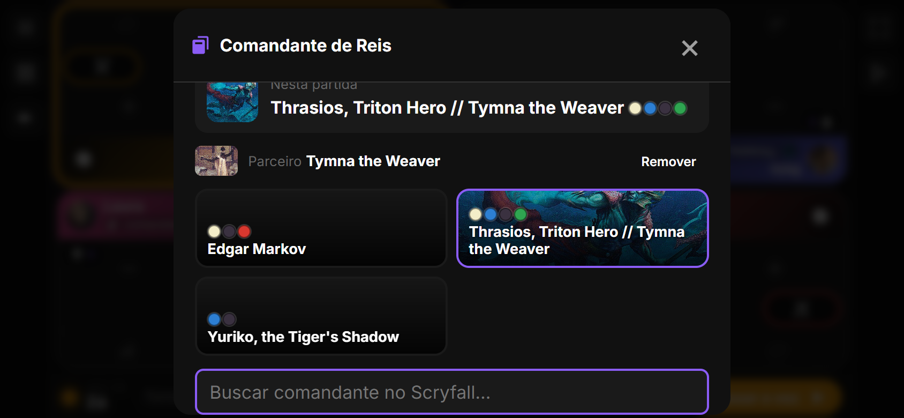
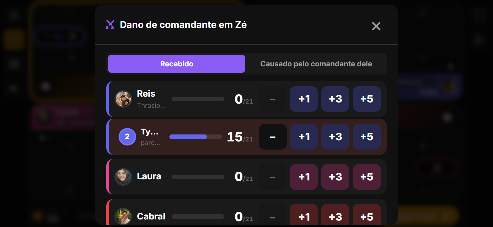
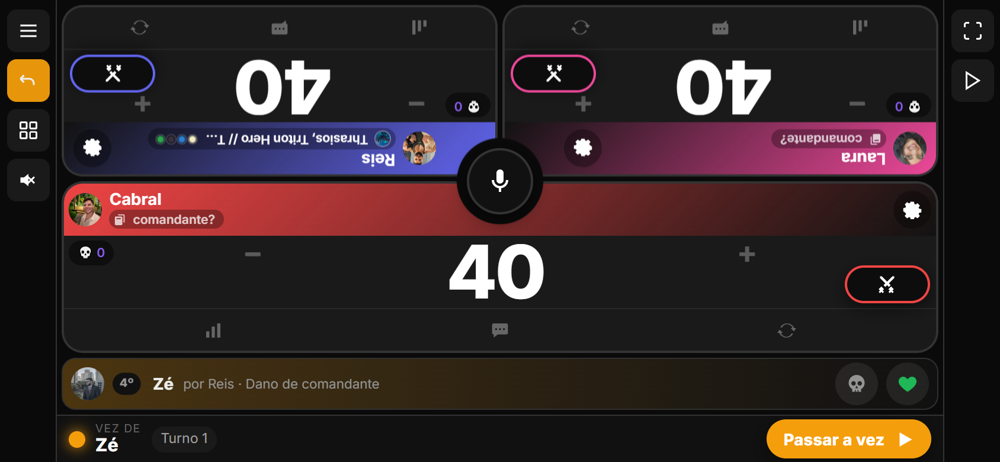
A linha do tempo já sabia detectar troca de líder, mas só mostrava no fim. Agora, quando alguém assume a maior vida da mesa, aparece "Fulano assumiu a ponta no turno N (era Beltrano)" e o narrador fala, se estiver ligado. Toques de ±1 que fazem a ponta oscilar não contam: o app espera 2,5 s de estabilidade.
Na temporada entrou o prêmio Maior virada: quem venceu estando mais atrás do líder em algum momento (diferença de vida reconstruída do log; mínimo 10). Aparece com os outros prêmios parciais e no Hall ao fechar.
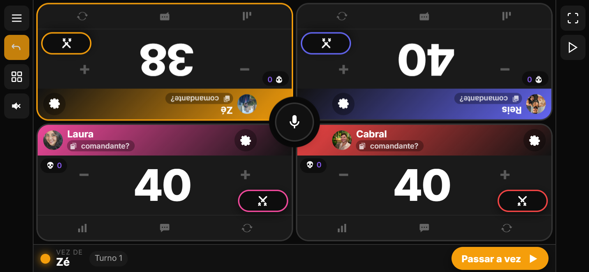
A música ambiente ganhou a opção Automática: mesa calma toca Natureza; alguém com 5 de vida ou menos, 8 de veneno ou 15 de dano de comandante vira tensão (Sombria); quando sobram dois, clímax (Épica). A troca é suave: a trilha atual desce em 1,2 s e a nova entra em 1,5 s.
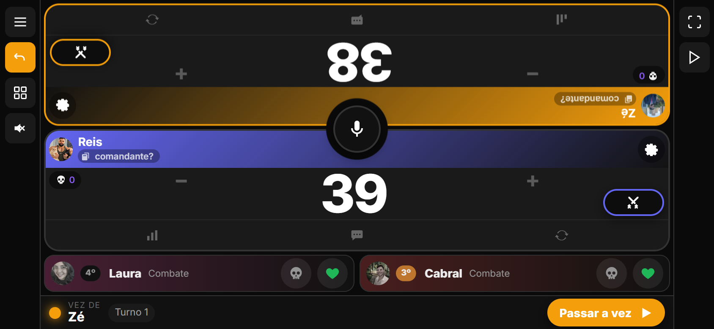
O relógio do descanso de tela agora rotaciona, a cada 20 s, um fato real dos dados: "X nunca venceu começando", "nêmesis de Y: Z (4×)", "partida mais longa da temporada: 2h18", "X vence 60% das partidas que começa", "comandante da temporada: Atraxa". Vem das estatísticas que o narrador já carrega no início da partida; sem rede, mostra só o relógio.
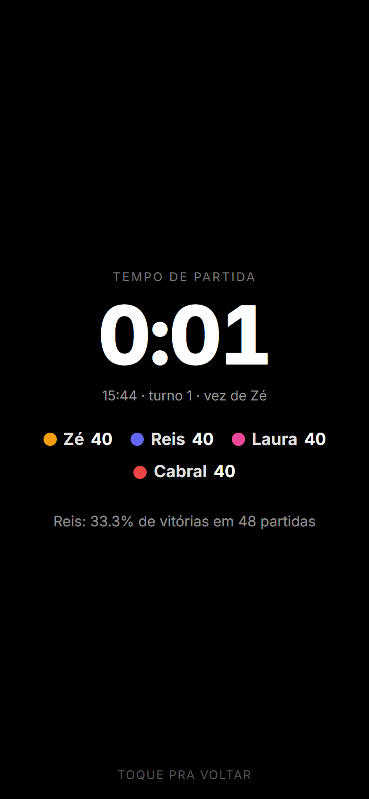
Até aqui o comandante só aparecia dentro do perfil de cada um. A aba Comandantes do Ranking junta todos os pilotos: vitórias, partidas, aproveitamento, colocação média e quem pilota. Toque no deck abre o deck contra deck: quantas vezes ele terminou na frente de cada outro deck que sentou na mesma mesa. Filtro Geral ou Temporada.
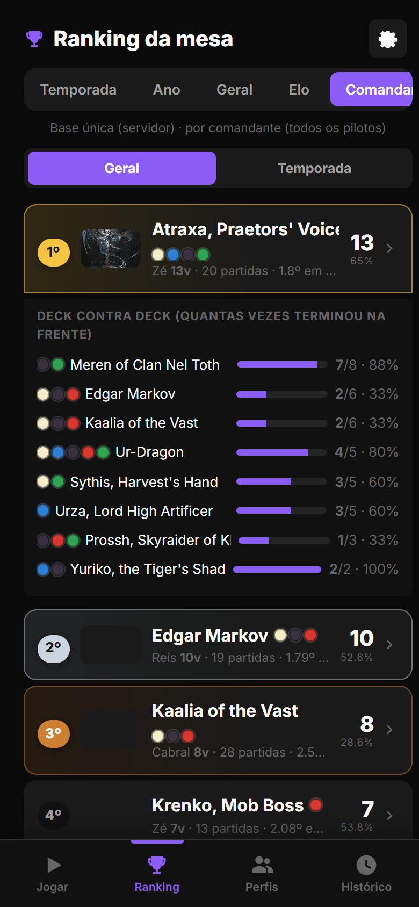
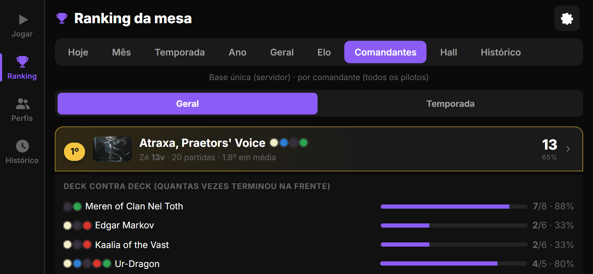
Desde a 2.5.0 o app guarda quem começou cada partida. Agora isso vira número: na página da temporada, "quem começa vence X%" contra o esperado (1/N médio da mesa); no perfil, "vence quando começa" contra "sem começar". Serve pra saber se o sorteio justo está fazendo diferença.
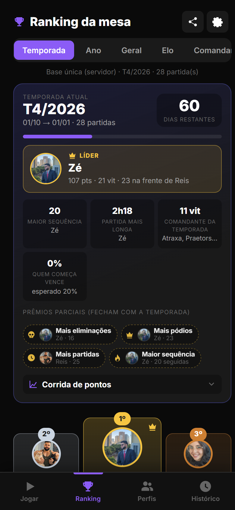
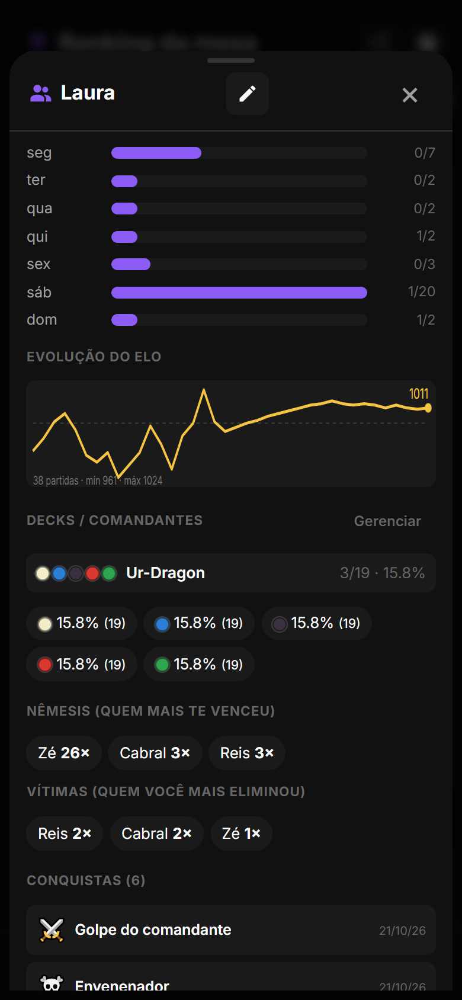
O servidor já aceitava, faltava a tela. Em Perfil › Decks › Gerenciar: renomear, apagar (o histórico fica) e juntar dois decks: as partidas de um passam pro outro e o duplicado some. E buscar de novo o mesmo comandante não cria outro deck: o app devolve o que já existe.
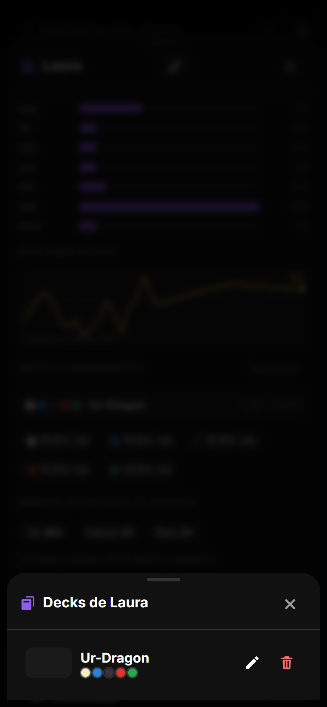
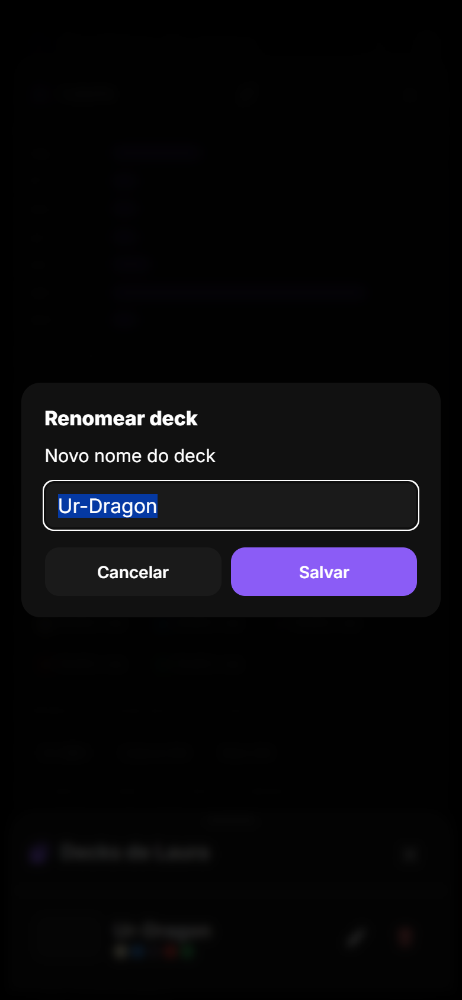
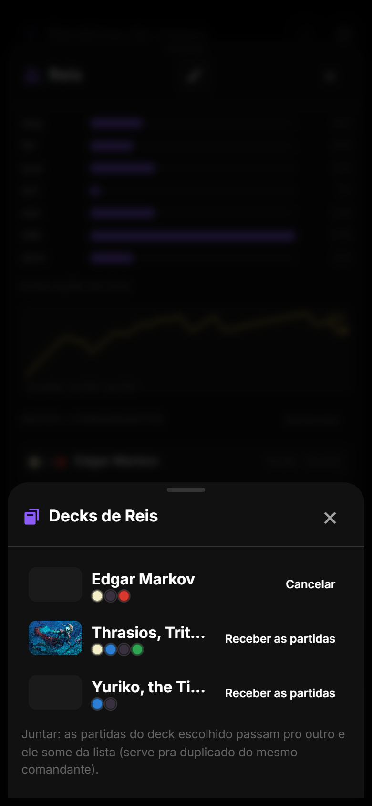
O cliente mandava só os primeiros 500 eventos da partida. Uma mesa de 5 com duas horas passa disso fácil, e aí o fim sumia: quedas tardias, a vitória, o final do gráfico e conquistas que dependem do fim. Agora vai tudo (até 5000, o limite do próprio estado). Testado com 1200 eventos.
| Onde | O que mudou |
|---|---|
| Parceiros | Player.partnerName/partnerImage/partnerColors; chave `${id}:2` em commanderDamage; addCommanderDamage(…, slot); EventDetails.slot; cmdKeySource/cmdKeySlot/cmdNameFor no ui.ts; busca Scryfall com t:background no modo parceiro. |
| Virada | trackLeaderLive (2,5 s de estabilidade) no renderGame; backend _max_deficit + prêmio comeback em _season_awards. |
| Trilha | AmbientMusicTrack 'auto'; setMood(calm|tension|climax) com rampa de ganho; updateTableMood por render. |
| Descanso | tableStats (stats por jogador) + seasonFacts carregados com o contexto do narrador; restFacts(); .sr-fact. |
| Backend | GET /api/commanders/?period= (agrupado por nome do deck entre perfis, com vs); POST /api/decks/<id>/merge/; dedupe no POST /profiles/<id>/decks/ (scryfall_id ou nome); starts_wins/starts_win_rate/non_start_win_rate no perfil; starter no resumo da temporada. Testes: tests_lote7.py (6 novos, 33 no total). |
| Log | ranking.ts: events.slice(0, 5000); deck_name cortado em 60 pro servidor. |
| Testes | QA novo (qa15): parceiro de ponta a ponta com Scryfall real, troca de líder e oscilação, clima da trilha (nature → dark → epic), descanso com curiosidade, aba Comandantes em pé e deitado, temporada, perfil e gerenciador. Suítes anteriores sem regressão; zero erros de JS. |
Como atualizar. No Android, o app avisa ao abrir e instala com um toque (ou Configurações › Atualização). No navegador basta recarregar.